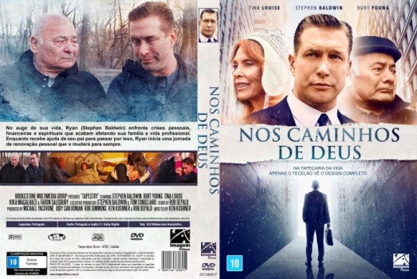

Nos Caminhos de Deus (2019)

In the tapestry of life, only the weaver sees the full design

Avaliação (TMDb):


7.5/10 (2 votos)
Avaliação (Usuário):
Outro Título:Tapestry
País:United States, 98 minutos
Idiomas falados:Inglês, Português
Gênero(s):Drama
Diretor(s):Ken Kushner
Codec:MPEG-2 (DVD)
Número: 4343
Sinopse:
Ryan em meio a uma crise pessoal e espiritual pesada, auxiliado por seu pai Ian e sua família, embarca em uma jornada pessoal que mudará para sempre sua vida.
Elenco:
David J Choi, Stephen Baldwin, Burt Young, Tina Louise, Joseph D'Onofrio, Lindsay-Elizabeth Hand, Josie Gallina
Tipo de mídia: DVD5,
Legendas: Português,
Alugado: Não
Tela: Anamorphic Widescreen